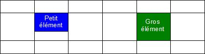
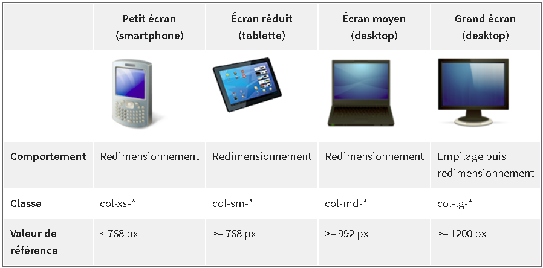
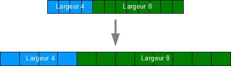
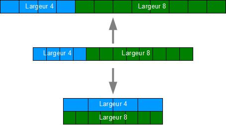
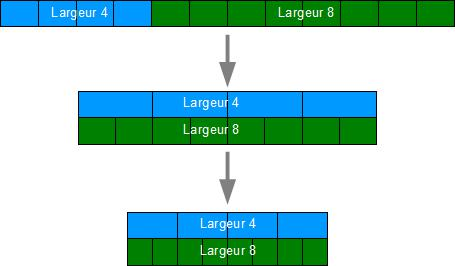
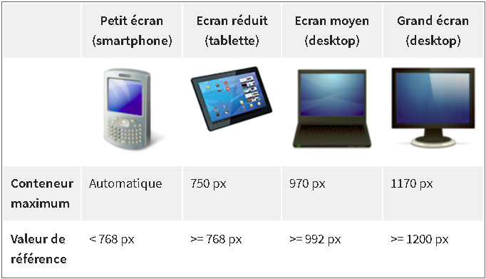

Bootstrap facilite l'organisation spatiale des pages web grâce à son système de grille.
I./ Présentation
1.) Le principe d'une grille
Une grille est tout simplement un découpage en cellules, de façon à ce que l'on puisse organiser le contenu en utilisant pour chaque élément une ou plusieurs
cellules. La grille de Bootstrap comporte 12 colonnes. Concrètement, elle est découpée en rangées (appelées row) et colonnes (col).
2.) La grille de Boostrap
Le découpage en colonnes est tout simplement une division en pourcentage de la largeur de la fenêtre de visualisation. En revanche, il n'en est pas de même pour les
rangées. Ces dernières ont la hauteur de leur contenu :
Les rangées ont la hauteur de leur contenu

Moralité, une rangée prend la hauteur du plus gros élément qu'elle contient. Puisque la largeur des colonnes est contrainte, le flux de données s'écoule
verticalement, ce qui est un comportement HTML classique. Il faudra en tenir compte lors de la mise en page.
3.) Organisation de la grille
Bootsrap est essentiellement un fichier CSS. Il comporte de nombreuses classes que l'on peut utiliser directement dans les balises HTML.
La 1re classe à connaître est row, qui représente une rangée. Cette classe établit des marges négatives à droite et à gauche :
.row {
margin-right: -15px;
margin-left: -15px;
}
Il faut ensuite définir le nombre de colonnes pour chaque élément en sachant qu'il y en a au maximum 12. Pour définir le nombre de colonnes utilisées pour chaque
élément, on dispose de quatre battreries de 12 classes :
- col-xs-1, col-sm-1, col-md-1, col-lg-1
- col-xs-2, col-sm-2, col-md-2, col-lg-2
- ...
- col-xs-12, col-sm-12, col-md-12 ou col-ld-12
Pourquoi ces quatre sortes de classes pour les colonnes ?
==> Bootsrap est "responsive", ie il s'adapte à la taille de l'écran. Il permet une visualition aussi bien sur un écran géant que sur un smartphone. Mais que se
passe-t-il pour les éléments d'une page Web lorsque la fenêtre diminue ou s'élargit ? On peu envisager deux hypothèses : les éléments se redimensionnent en restant
positionnés, ou alors ils s'empilent quand la fenêtre devient plus étroite et se positionnent côte à côte quand elle s'élargit.
C'est ici qu'interviennent les 4 sortes de classes vues précédemment pour les colonnes. Bootstrap considère quatre sortes de médias:
- les petits, genre smartphones (moins de 768px)
- les moyens, genre tablettes (moins de 992px)
- les écrans moyens (moins de 1200px)
- et enfin, les grands écrans
Le tableau suivant illustre les différences de réaction selon la catégorie :
Différences de réaction selon chaque catégorie

Le nom des classes est intuitif : xs pour x-small, sm pour small, md pour medium et
lg pour large.
Pour avoir un élément de 4 colonnes de large accouplé avec un élément de 8 colonnes de large sur un smartphone, on a :
< div class="row">
< div class="col-xs-4">Largeur 4< /div>
< div class="col-xs-8">Largeur 8< /div>
< /div>
La figure suivante illustre ce code avec l'effet quand un passe sur n écran plus grand :

Si on remplace dans cet exemple xs par sm, voici l'effet quand on passe sur un écran plus petit ou plus grand :

Note: lors de l'empilage, les colonnes prennent toute la place disponible.
Et si on remplace maintenant la classe sm par lg, voici ce qu'on obtient :

La largeur des élémets de la grille est calculée en pourcentage selon la différence de visualisation. Rien n'interdit évidemment de mélanger les classes des 3
catégories pour créer de effets partiuliers avec certans éléments qui doivent s'empiler et d'autres pas (c'est même la stratégie utilisée pour la mise en page
"responsive" comme je vais bientôt le voir).
Pour les exemples qui vont suivre, je vais ajouter un peu de style pour qu'on voie bien les cellules ==> tuto.css
II./ La grille en pratique
1.) Le conteneur
La grille de Bootstrap doit être placée dans un conteneur. Bootstrap propose les class container et container-fluid. Leur
utilisation était auparavant optionnelle. Il est désormais clairement indiqué dans la doc qu'il faut la mettre en ouvre systématiquement si on veut obtenir
des aligenements et des espacements corrects. La classe container contient et centre la grille sur une largeur fixe, qui s'adapte en fonction
de la largeur de l'écran. La classe container-fluid permet à la grillle d'occuper toute la largeur. Dans les exemples de ce chapitre, je vais
utiliser systématiquement container pour avoir une visualisation plus facile des éléments. Ce conteneur a une largeur maximale selon le
média concerné, comme indiqué au tableau suivant.

Le centrage du conteneur est fait de façon classique avec de petites marges internes de 15px et les marges droites et gauches automatiques :
.container {
padding-left: 15px;
padding-right: 15px;
margin-left: auto;
margin-right: auto;
}
Ce sont les mêmes règles pour la classe container-fluid. Ce qui est ajouté pour la classe container est la limite de la largeur
spécifiée par média (grâce aux média queries) :
@media (min-width: 768px) {
.container {
width: 750px;
}
}
@media (min-width: 992px) {
.container {
width: 970px;
}
}
@media (min-width: 1200px) {
.container {
width: 1170px;
}
}
Attention: l'ordre des médias est très important, ici du plus étroit vers le plus large. De cette manière on a une surcharge des règles cohérente.
3.) Une seule rangée
Dans ce premier exemple, on va déclarer une seule rangée avec deux éléments qui occupent tout l'espace:
Réf Exemple 1
4.) Plusieurs rangées
Pour obtenir plusieurs rangées, il suffit d'utiliser plusieurs fois la class row. Un petit exemple avec 3 rangées pour voir l'effet :
Exemple 2
5.) Sauter des colonnes
Bootstrap permet aussi de sauter des colonnes. Il y a quelques classes d'offset pour ça :
- col-*-offset-1
- col-*-offset-2
- ...
- col-*-offset-11
Ces classes se contentent d'ajouter une marge à gauche. Par exemple :
.col-lg-offset-6 {
margin-left: 50%;
}
Dans ce cas, 6 colonnes représentant la moitié de la fenêtre, la marge est de 50%. Voici un exemple :
Exemple 3
6.) Imbrication d'éléments
On doit souvent imbriquer des élements dans une page web, et c'est tout-à-fait possible avec Bootstrap, il suffit d'inclure des row dans les
col.
Réf Exemple 4
Les imbrications peuvent s'enchaîner pour répondre à des besoins complexes:
Réf Exemple 5
7.) Ordre des colonnes
Très logiquement, les colonnes s'affichent dans l'ordre du flux. Il peut arriver qu'on veuille bouleverser cet ordre.
Réf Exemple 6 : Changer l'ordre
La class col-lg-push-* permet de décaler une ou plusieurs colonnes vers la droite et la classe col-lg-pull-* fait l'inverse.
L'intérêt principal d'une grille est de réaliser une mise en page. Je vais voir quelques exemples pour structurer correctement une page.
1.) Premier cas
Commençons par quelque chose de simple avec une en-tête, un menu à gauche, une section à droite et un pied de page:
Réf Mise en page 1
J'ai utilisé les classes pour grand écran avec les classes col-lg-*, ce qui fait qu'à la réduction, je me retrouve avec un empilage dès que
je passe en dessous de 1200 pixels.
Si je veux que ma mise en forme soit aussi stable pour les écrans moyens, il me suffit d'utiliser les classes col-md-* à la place de
col-lg-*, ce qui a pour effet de déplacer la limite à 992 pixels. De la même façon, l'utilisation des classes col-sm-* déplace
la limite à 768 pixels...
Mais, puisque j'ai le même résultat sans utiliser les classes col-lg-*, est-elle vraiment utile ?
==> On obtient effectivement la même mise en page, mais les classes col-* ont un padding droite et gauche de 15 pixels, et si on n'utilise pas la
classe col-lg-12, on va avoir une incohérence au niveau du contenu.
2.) Second cas
Réf Mise en page 2
L'ensemble est prévu pour le desktop (grand et petit) et les tablettes.
3.) Troisième cas
Réf Mise en page 3
Dans cet exemple, l'en-tête et le pied de page ont la classe col-lg-12, alors que dans l'exemple précédent on avait col-sm-12...
==> Comme la largeur est de 12 colonnes, tout ce qui m'intéresse est le centrage, que ces deux classes ont en commun, sans influence du média utilisé. On peut donc
utiliser indifféremment ces deux classes dans mon cas.
4.) Quatrième cas
Réf Mise en page 4
Bref. Le plus délicat dans ma mise en page demeure le choix des classes pour les colonnes en fonction du résultat que l'on désire selon les médias utilisés. Dans
tous les cas, il faut tester les différents formats parce que le rendu ne donne pas forcément du premier coup ce qu'on avait prévu. Si je n'y parviens pas avec
une seule classe, la solution est d'en combiner plusieurs, c'est ce que je vais voir bientôt...
En résumé
Bootstrap propose une grille pour positionner tous les éléments des pages Web.
La grille est versatile et permet de nombreuses combinaisons comme des inclusions, des sauts de colonnes.
La grille rend possible également une adaptation selon les dimensions du support de visualisation en réorganisant les éléments ou en masquant certains.